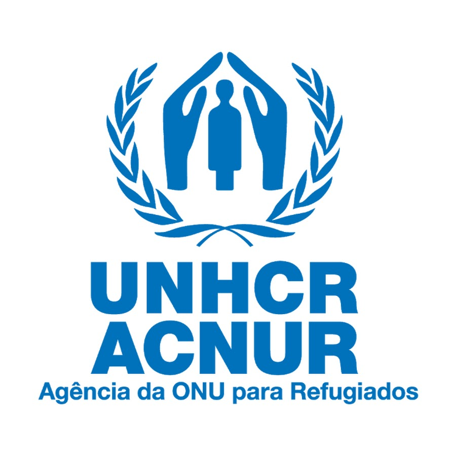
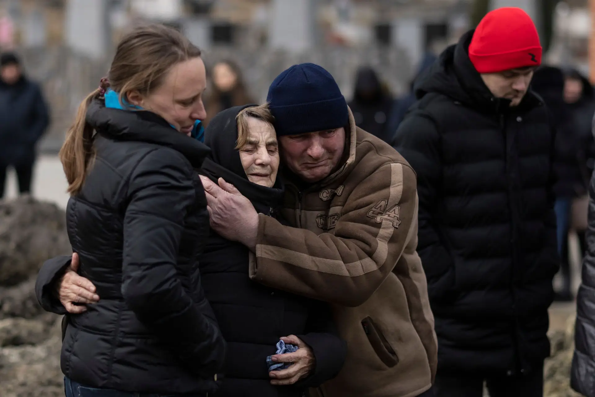

Opções de doação:

ACNUR
Ajuda com comida, água, saúde, abrigo, educação e apoio emocional para quem está deslocado pela guerra na Ucrânia.
Desde fevereiro de 2022, a Ucrânia tem enfrentado uma das maiores tragédias humanitárias do século XXI. A invasão russa, iniciada com justificativas políticas e territoriais, mergulhou o país em um conflito devastador que ainda continua, afetando milhões de civis inocentes.
A guerra não atinge apenas soldados — ela destrói vidas comuns. Mais de 2 milhões de crianças foram obrigadas a fugir de suas casas, muitas delas perdendo os pais ou vivendo em abrigos precários, sem acesso a alimentos, saúde ou educação. Famílias foram separadas: enquanto os homens ficaram para lutar, mulheres e crianças fugiram para países vizinhos, muitas vezes sem jamais se reencontrarem.
Hospitais, escolas e prédios residenciais foram bombardeados. Em diversas regiões, não há eletricidade, água ou comida. Durante os meses de inverno, milhares de pessoas enfrentaram o frio extremo sem aquecimento, vivendo em ruínas ou abrigos improvisados. O sofrimento é diário, real e profundo
Neste cenário, cada ato de solidariedade faz diferença. Doar é um gesto de empatia que pode significar um cobertor para uma criança, uma refeição quente para uma família ou atendimento médico para um ferido. Enquanto o conflito persiste, a ajuda humanitária é a única esperança imediata para muitos ucranianos que perderam tudo.
Ajuda com comida, água, saúde, abrigo, educação e apoio emocional para quem está deslocado pela guerra na Ucrânia.
| Sobre o COD: | Sobre Nós: | Contate-nos: |
|---|---|---|
| ©CallofDonation | Criado por: | Callofdonation@gmail.com |
| é um site de arrecadação de | Artur Oliveira | |
| fundos para vítimas de guerra | Andrey Tavares | |
| Éric Alves | ||
| Gabriel Ferreira |